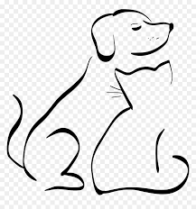

About Us
RescueGroups.org is a non-profit organization that provides free and low-cost technology services to the animal welfare community. RescueGroups.org is an unaffiliated, volunteer-driven, non-competitive organization that wants to work with like-minded organizations to help animal welfare organizations, volunteers and pets.
We’re rallying pet owners and pet lovers to take action to help keep pets with their families. Together, we can strengthen our communities and ease the burden on animal shelters. Pets and people belong together.
Our Mission and Values:
We believe that animal's lives are valuable and should be cherished
We believe that people should be educated about the impact of animal overpopulation
We believe that animal rescue work is important
We believe that spay/neuter is integral to ending the animal overpopulation problem
We believe that effective collaboration is essential to ending the animal overpopulation problem
We believe that technology can increase the effectiveness of people's work and reach their goals more easily
We believe that animal organizations should have access to cost-effective technology solutions
We believe that people's time is valuable